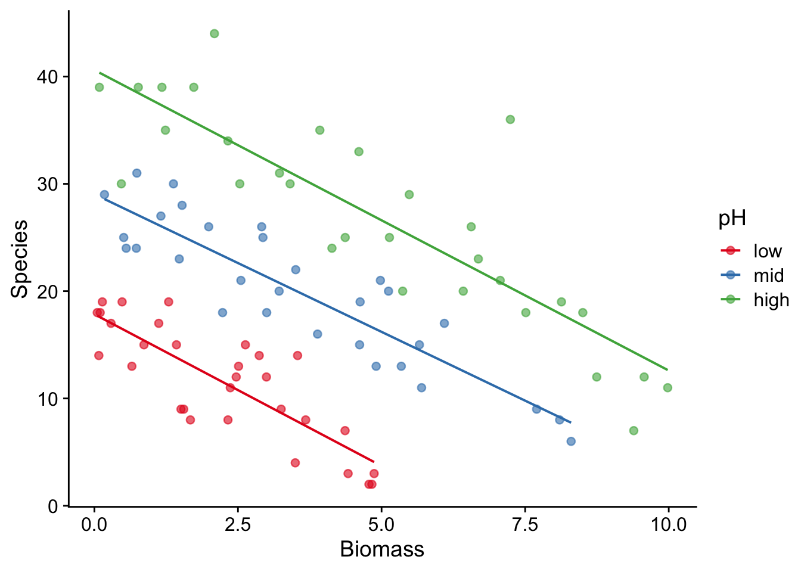
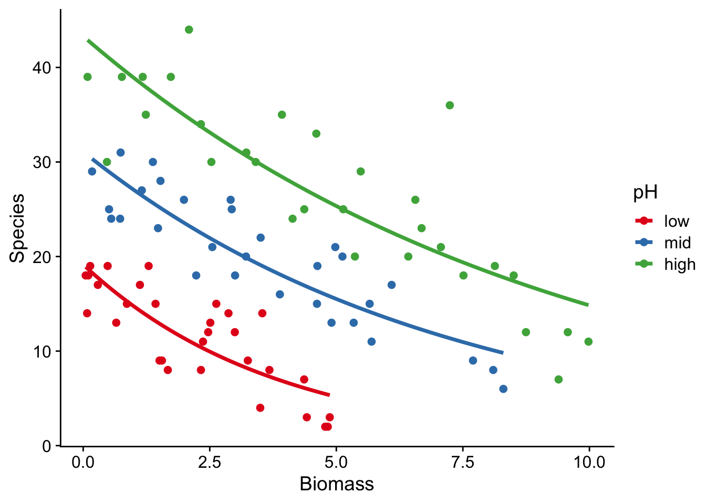

# these are the packages we will need for this script
library(tidyverse)
library(here)
library(cowplot)
library(ggfortify)15 GLM with count data
15.1 Why is simple linear regression often inappropriate for count data?
Simple linear regression assumes constant variance and normal distrivution of the errors (residuals)
- the linear model might lead to the prediction of negative counts
- the variance of the response variable is likely to increase with the mean
- the errors will not be normally distributed
- zeros are difficult to handle in transformations
All the issues can be handled if instead we use a generalised linear models (GLM)
This example is taken from Crawley (2014), p247.
Suppose we are investigating the effect on species richness in some plots that have different total biomass and one of three different levels of soil acidity: low, medium and high pH. Richness values have been counted on each of 90 plots, 30 with each level of soil pH.
species <- here("data","species.csv") |> # species.csv needs to be in the data folder within your project folder.
read_csv() |>
glimpse() Rows: 90
Columns: 3
$ pH <chr> "high", "high", "high", "high", "high", "high", "high", "high"…
$ Biomass <dbl> 0.46929722, 1.73087043, 2.08977848, 3.92578714, 4.36679265, 5.…
$ Species <dbl> 30, 39, 44, 35, 25, 29, 23, 18, 19, 12, 39, 35, 30, 30, 33, 20…We have one response variable Species which is a count, and two predictors: Biomass which is a continuous numerical variable and pH which has been recorded as an ordinal variable with three levels (low, mid, high).
First, a bit of housekeeping. We ensure that the levels of pH are logged in R’s brain in the ordering that makes sense, that is, “low”, then “medium” then “high”, and not as R would unless we did something about it, which is to do so alphabetically” “high” then “low” then “medium”.
This minor but important task often comes up when dealing with a categorical variable that has several levels, so this small chunk of code is worth remembering:
species <- species |>
mutate(pH = fct_relevel(pH, "low", "mid", "high"))Now we’ll plot the data as species richness vs biomass, with a best-fit straight line for each class of pH.
species |>
ggplot(aes(x = Biomass, y = Species, colour = pH)) +
geom_point(alpha = 0.6) +
geom_smooth(aes(colour = pH),method = "lm", se = F, alpha = 0.2, linewidth = 0.7) +
scale_colour_brewer(palette = "Set1") +
theme_cowplot()
15.2 Analysis using linear model: ANCOVA
How did we get these straight lines? We can find the intercept and gradients for these lines by using a linear model, in the form of an ANCOVA (ANalysis of COVAriance), which is just like a two-way ANOVA except that one of the explanatory variables is continuous.
First we try an interactive model, remembering that Biomass*pH is shorthand for Biomass + pH + Biomass:pH, where the Biomass and pH terms are the main effects of each variable, and Biomass:pH is the interaction between them.
model_interaction <- lm(Species ~ Biomass * pH, data = species)In this model, a non-zero main effect of biomass means that the lines have non-zero gradient - the species richness depends on biomass, irrespective of pH class. A non-zero main-effect of pH means that the lines for each pH class are separate from each other - pH makes a difference to species richness, for all values of biomass. A non-zero interaction between biomass and pH class means that the gradients of the lines are different - the degree to which the species richness varies with one factor depends on the value of the other factor.
To see if any of these terms are significant, we use the anova() function:
anova(model_interaction)Analysis of Variance Table
Response: Species
Df Sum Sq Mean Sq F value Pr(>F)
Biomass 1 838.5 838.51 57.5126 4.105e-11 ***
pH 2 6268.9 3134.43 214.9878 < 2.2e-16 ***
Biomass:pH 2 6.3 3.13 0.2147 0.8073
Residuals 84 1224.7 14.58
---
Signif. codes: 0 '***' 0.001 '**' 0.01 '*' 0.05 '.' 0.1 ' ' 1This tells us that there is no evidence for an interaction between biomass and pH class, but that there is a main effect of biomass and of pH. Species richness does vary with biomass, and for any given value of biomass the richness will differ depending on the pH class.
How big are these effects?
summary(model_interaction)
Call:
lm(formula = Species ~ Biomass * pH, data = species)
Residuals:
Min 1Q Median 3Q Max
-9.290 -2.554 -0.124 2.208 15.677
Coefficients:
Estimate Std. Error t value Pr(>|t|)
(Intercept) 17.84740 1.22510 14.568 < 2e-16 ***
Biomass -2.82778 0.45357 -6.235 1.74e-08 ***
pHmid 11.18359 1.76813 6.325 1.17e-08 ***
pHhigh 22.75667 1.83564 12.397 < 2e-16 ***
Biomass:pHmid 0.26268 0.54557 0.481 0.631
Biomass:pHhigh 0.02733 0.51248 0.053 0.958
---
Signif. codes: 0 '***' 0.001 '**' 0.01 '*' 0.05 '.' 0.1 ' ' 1
Residual standard error: 3.818 on 84 degrees of freedom
Multiple R-squared: 0.8531, Adjusted R-squared: 0.8444
F-statistic: 97.58 on 5 and 84 DF, p-value: < 2.2e-16According to this model there is evidence that species richness declines with increasing biomass and is substantially greater at higher pH values, but there is no evidence that pH affects the relationship between species richness and biomass.
Make sure you can see how the intercepts and gradients of the three lines in the plot above can be got from the model summary.
But, is it really true? Do we believe what it is telling us, that pH has no effect on the relationship between species and biomass?
That there is a problem here with the linear model becomes clear if we extropolate its predictions (ie the lines in the plot) to higher values of biomass. For each pH class it predicts negative species counts above some value of biomass, for example above about 6 at low pH. But this is nonsense: counts are strictly bounded below by zero and any sensible model should take account of this.
So we refit using a GLM and Poisson errors instead of a linear model.
15.3 Fit using GLM
model_glm_poisson_interaction <- glm(Species ~ Biomass*pH, family = "poisson", data = species)
summary(model_glm_poisson_interaction)
Call:
glm(formula = Species ~ Biomass * pH, family = "poisson", data = species)
Coefficients:
Estimate Std. Error z value Pr(>|z|)
(Intercept) 2.95255 0.08240 35.833 < 2e-16 ***
Biomass -0.26216 0.03803 -6.893 5.47e-12 ***
pHmid 0.48411 0.10723 4.515 6.34e-06 ***
pHhigh 0.81557 0.10284 7.931 2.18e-15 ***
Biomass:pHmid 0.12314 0.04270 2.884 0.003927 **
Biomass:pHhigh 0.15503 0.04003 3.873 0.000108 ***
---
Signif. codes: 0 '***' 0.001 '**' 0.01 '*' 0.05 '.' 0.1 ' ' 1
(Dispersion parameter for poisson family taken to be 1)
Null deviance: 452.346 on 89 degrees of freedom
Residual deviance: 83.201 on 84 degrees of freedom
AIC: 514.39
Number of Fisher Scoring iterations: 4The residual deviance is not greater than the number of degrees of freedom so we do not need to correct for overdispersion. Do we need to retain the interaction term? Let us test this by fitting an additive model without it:
model_glm_poisson_NO_interaction <- glm(Species ~ Biomass + pH, data = species)
anova(model_glm_poisson_interaction, model_glm_poisson_NO_interaction, test = "Chi")Analysis of Deviance Table
Model 1: Species ~ Biomass * pH
Model 2: Species ~ Biomass + pH
Resid. Df Resid. Dev Df Deviance Pr(>Chi)
1 84 83.2
2 86 1230.9 -2 -1147.7 < 2.2e-16 ***
---
Signif. codes: 0 '***' 0.001 '**' 0.01 '*' 0.05 '.' 0.1 ' ' 1So we do need to retain the interaction. There is a highly significant difference between the slopes at different levels of pH. So Model 1 is the minimally adequate model.
Now we plot fitted curves through the data
species |>
ggplot(aes(x = Biomass, y = Species, colour = pH)) +
geom_point() +
geom_smooth(method = "glm", se = FALSE, method.args = list(family = "poisson")) +
scale_colour_brewer(palette = "Set1") +
theme_cowplot()